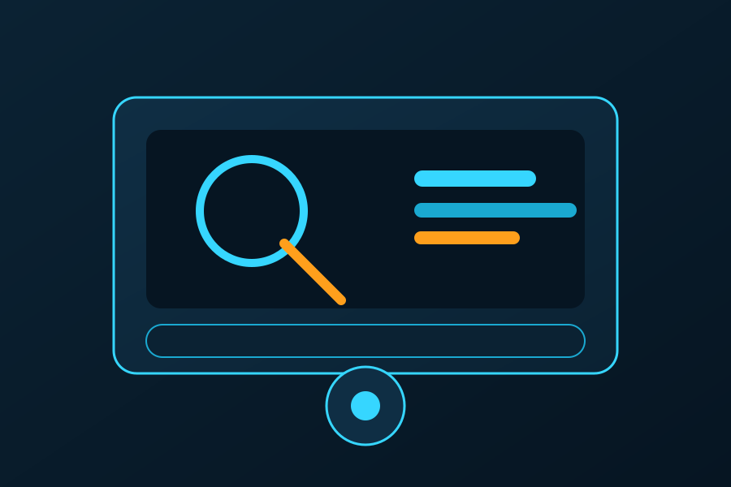
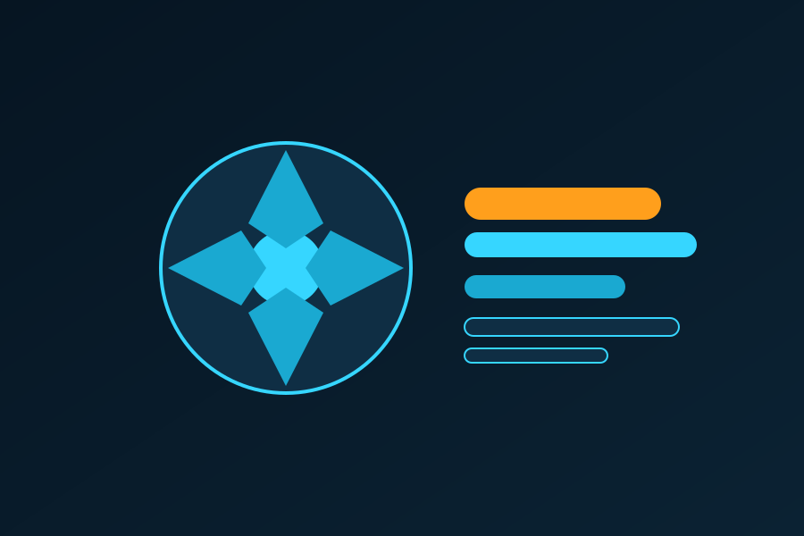
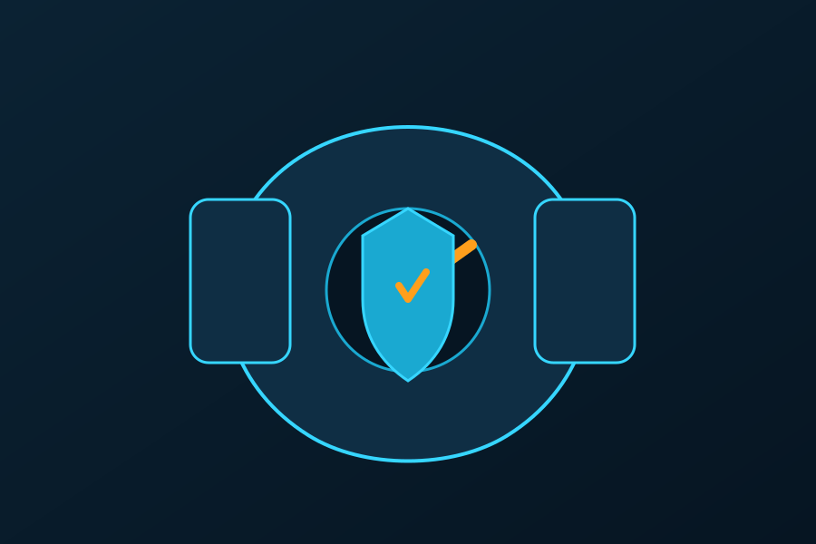

Mantencion Preventiva y Optimizacion de Equipos
Servicio profesional para mantener tus equipos estables, seguros y con mejor rendimiento.
Resumen del Servicio
Este servicio esta orientado a empresas y usuarios que necesitan reducir fallos, mejorar la velocidad de sus equipos y extender su vida util. Combinamos limpieza fisica, optimizacion del sistema y refuerzo de seguridad para dejar el entorno listo para operar con confianza.
Cada mantencion se realiza con un checklist documentado, recomendaciones personalizadas y validacion final para asegurar que el rendimiento y la estabilidad queden en niveles optimos.
Alcance y Entregables
- Diagnostico completo: revision de hardware, almacenamiento y estado del sistema operativo.
- Limpieza interna: eliminacion de polvo, ajuste de ventilacion y verificacion de temperatura.
- Optimizacion de software: ajustes de inicio, actualizaciones criticas y limpieza de residuos.
- Seguridad y respaldo: escaneo de amenazas, configuracion de protecciones y copias de seguridad.
- Informe final: resumen de hallazgos, mejoras aplicadas y recomendaciones futuras.
Plan de Trabajo
Una ejecucion ordenada para minimizar tiempos fuera de servicio y asegurar resultados medibles.
Evaluacion Inicial
Levantamiento de sintomas, diagnostico de hardware y validacion de puntos criticos.
Intervencion Tecnica
Limpieza interna, ajustes de rendimiento, actualizaciones y eliminacion de amenazas.
Validacion y Reporte
Pruebas de estabilidad, recomendaciones preventivas y entrega de informe final.
Galeria del Proceso


